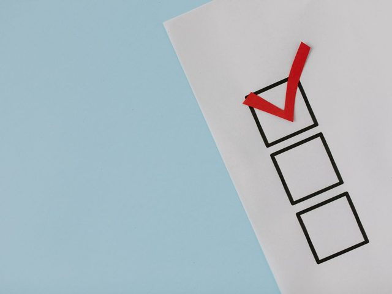
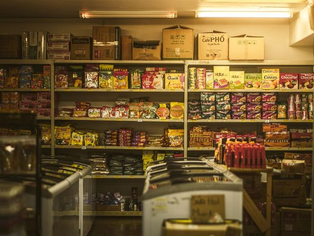
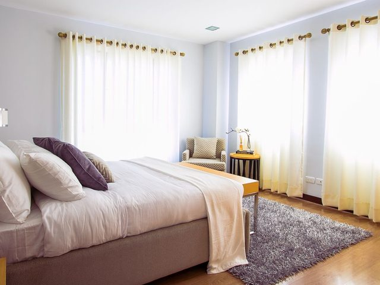

LALA WORD · UNIT 16
一字多義（十六）
Moo Deng the Pygmy Hippo
25 個單字一字多義
本單元單字一覽
wave 是海浪，也是「揮手」；letter 是信，也是「字母」。這個單元有 4 個主題單字、14 個更多單字，再整理 quiet／quite、along／alone／lonely，和字尾 -ful、字首 re-。
cheerwavelettersetasbycorrectcoursecrossmindparkpowerrowsightsignstoretidyyardbeautifulcarefulthankfulwonderfulusefulreviewreturn
每個字先聽 🔊，再一個意思一個意思看例句。
1. cheer 主題單字．2 個意思

cheer
cheer - cheered - cheered - cheering
v.歡呼；喝采cheer up 打起精神；使開心
The fans cheered when the team scored.
球隊得分時球迷歡呼。
n.歡呼；鼓勵
We gave a big cheer for the winners.
我們為優勝者大聲歡呼。
2. wave 主題單字．3 個意思

wave
wave - waved - waved - waving
n.浪
The waves are big today.
今天浪很大。
n.揮手
She gave me a wave from the bus.
她從公車上對我揮手。
v.揮手wave goodbye 揮手道別
The kids waved goodbye to their grandparents.
孩子們向祖父母揮手道別。
3. letter 主題單字．2 個意思
letter
複數 letters
n.信
I wrote a letter to my pen pal.
我寫了一封信給我的筆友。
n.字母
The word "dog" has three letters.
dog 這個字有三個字母。
4. set 主題單字．4 個意思

set
set - set - set - setting
v.設定（鬧鐘、規則）set up 架設；成立；set off 出發
I set my alarm for six.
我把鬧鐘設在六點。
v.樹立（榜樣）
Older kids should set a good example.
年紀大的孩子應該樹立好榜樣。
v.擺放set the table 擺餐具
Please set the table for dinner.
請擺好餐具準備吃晚飯。
n.一組；一套
I bought a new set of colored pencils.
我買了一套新色鉛筆。
5. as 更多單字．4 個意思
🟰
as
conj.當…時
As I was leaving, it started to rain.
我正要離開時開始下雨了。
conj.像…一樣
Do as I say.
照我說的做。
adv.和…一樣as + 形容詞 + as 和…一樣；as usual 和平常一樣
He is as tall as his father.
他和他爸爸一樣高。
prep.作為；身為
She works as a nurse.
她的工作是護理師。
6. by 更多單字．4 個意思

by
prep.在…旁邊
There is a café by the lake.
湖邊有一家咖啡店。
prep.藉由（方式）by oneself 獨自
We went to Kaohsiung by train.
我們搭火車去高雄。
prep.被（被動語態）
This book was written by a teenager.
這本書是一個青少年寫的。
prep.在…之前
Please finish the report by Friday.
請在星期五前完成報告。
7. correct 更多單字．2 個意思

correct
correct - corrected - corrected - correcting
v.改正；訂正
Correct the mistakes in your homework.
訂正你作業裡的錯誤。
adj.正確的
That's the correct answer.
那是正確答案。
8. course 更多單字．3 個意思

course
複數 courses
n.課程
She is taking a cooking course.
她在上烹飪課。
n.（餐點的）一道菜
The main course is steak.
主菜是牛排。
n.路線；方向of course 當然
The plane changed its course.
飛機改變了航道。
9. cross 更多單字．3 個意思

cross
cross - crossed - crossed - crossing
v.穿越
Look both ways before you cross the street.
過馬路前要看兩邊。
v.使交叉cross one's fingers 祈求好運
Let's cross our fingers for good luck.
我們祈求好運吧。
n.十字形；叉號
Put a cross next to the wrong answers.
在錯誤答案旁邊打叉。
10. mind 更多單字．4 個意思
🧠
mind
mind - minded - minded - minding
n.頭腦come to mind 浮現腦海
A good idea came to mind.
我想到一個好主意。
n.想法；心意make up one's mind 下定決心
I changed my mind.
我改變主意了。
v.介意
Do you mind if I sit here?
你介意我坐這裡嗎？
v.小心；注意
Mind the gap.
小心月台間隙。
11. park 更多單字．2 個意思

park
park - parked - parked - parking
n.公園
Let's have a picnic in the park.
我們去公園野餐吧。
v.停車
You can't park here.
這裡不能停車。
12. power 更多單字．3 個意思
power
n.力量；能力
Music has the power to make people happy.
音樂有讓人快樂的力量。
n.電力；能源
The typhoon cut the power.
颱風造成停電。
n.影響力；權力
The king had a lot of power.
國王有很大的權力。
13. row 更多單字．2 個意思

row
row - rowed - rowed - rowing
n.一排in a row 連續
We sat in the front row.
我們坐在第一排。
v.划（船）
They rowed the boat across the lake.
他們划船橫渡湖面。
14. sight 更多單字．3 個意思
sight
複數 sights
n.視力；視覺
My grandpa has poor sight.
我爺爺視力不好。
n.景象；看見at first sight 第一眼；out of sight 看不見
It was love at first sight.
那是一見鍾情。
n.名勝；景點（sights）
We saw all the sights of Tainan.
我們看遍了臺南的景點。
15. sign 更多單字．4 個意思

sign
sign - signed - signed - signing
n.標誌；招牌
The sign says "No Parking."
牌子上寫著「禁止停車」。
n.符號；記號
"+" is the plus sign.
「+」是加號。
n.手勢sign language 手語
She can use sign language.
她會用手語。
v.簽名sign up 報名
Please sign your name here.
請在這裡簽名。
16. store 更多單字．2 個意思

store
store - stored - stored - storing
n.商店
There is a convenience store on the corner.
轉角有一家便利商店。
v.儲存
Store the rice in a cool place.
把米存放在陰涼的地方。
17. tidy 更多單字．2 個意思

tidy
tidy - tidier - tidiest；tidy - tidied - tidied - tidying
adj.整潔的
Her room is always tidy.
她的房間總是很整齊。
v.收拾；整理tidy up 收拾
Tidy up your desk, please.
請整理你的桌子。
18. yard 更多單字．2 個意思

yard
複數 yards
n.院子
The kids are playing in the yard.
孩子們在院子裡玩。
n.碼（約 0.91 公尺）
He kicked the ball forty yards.
他把球踢了四十碼遠。
19. beautiful 更多單字．1 個意思
🌺
beautiful
beauty + -ful
adj.美麗的
What a beautiful sunset!
好美的夕陽！
20. careful 更多單字．1 個意思
⚠️
careful
care + -ful
adj.小心的
Be careful with the hot soup.
小心熱湯。
21. thankful 更多單字．1 個意思
🙏
thankful
thank + -ful
adj.感謝的
I'm thankful for my family.
我很感謝我的家人。
22. wonderful 更多單字．1 個意思
🤩
wonderful
wonder + -ful
adj.極好的；精彩的
We had a wonderful time at the beach.
我們在海邊玩得很開心。
23. useful 更多單字．1 個意思
🧰
useful
use + -ful
adj.有用的
This app is very useful.
這個 app 很有用。
24. review 更多單字．1 個意思
📚
review
re- + view
v.複習；溫習
Review your notes before the test.
考試前複習你的筆記。
25. return 更多單字．1 個意思
↩️
return
re- + turn
v.返回；歸還
Please return the book by Monday.
請在星期一前還書。
易混淆字：quiet 和 quite
| 單字 | 意思 | 例句 |
|---|---|---|
| quiet | （形容詞）安靜的 | Please be quiet in the library. |
| quite | （副詞）相當；頗 | The test was quite easy. |
兩個字只差 e 和 t 的位置，唸法也不同：quiet 兩個音節，quite 一個音節。
易混淆字：along／alone／lonely
| 單字 | 意思 | 例句 |
|---|---|---|
| along | 沿著；一起 | We walked along the river. |
| alone | 單獨的；獨自（客觀描述，沒有別人在） | She lives alone. |
| lonely | 孤單的；寂寞的（主觀感受） | He feels lonely without his friends. |
一個人（alone）不一定寂寞（lonely）。
字尾 -ful、字首 re-
| 原來的字 | 加字首／字尾 | 意思 |
|---|---|---|
| beauty 美 | beautiful | 美麗的 |
| care 小心 | careful | 小心的 |
| thank 感謝 | thankful | 感謝的 |
| wonder 驚奇 | wonderful | 極好的 |
| use 用途 | useful | 有用的 |
| view 看 | review | 複習 |
| turn 轉 | return | 返回；歸還 |
-ful＝充滿…的；re-＝再次、回來。
一字多義：最常見 vs. 容易忽略的意思
| 單字 | 最常見的意思 | 容易忽略的意思 |
|---|---|---|
| wave | 浪 | 揮手 |
| letter | 信 | 字母 |
| set | 設定 | 一組；擺放 |
| course | 課程 | 一道菜；of course |
| mind | 頭腦 | 介意；小心 |
| park | 公園 | 停車 |
| row | 一排 | 划船 |
| yard | 院子 | 碼 |
快問快答：這句的 粗體字 是什麼意思？
1We gave a big cheer for the winners.歡呼；鼓勵
2The kids waved goodbye to their grandparents.揮手
3The word "dog" has three letters.字母
4I bought a new set of colored pencils.一組；一套
5She works as a nurse.作為；身為
6Please finish the report by Friday.在…之前
7That's the correct answer.正確的
8The plane changed its course.路線；方向
快問快答：這句的 粗體字 是什麼意思？
1Put a cross next to the wrong answers.十字形；叉號
2Mind the gap.小心；注意
3You can't park here.停車
4The king had a lot of power.影響力；權力
5They rowed the boat across the lake.划（船）
6We saw all the sights of Tainan.名勝；景點（sights）
7Please sign your name here.簽名
8Store the rice in a cool place.儲存
學完了！接下來
複習方法
review
- 回到「📗 單字卡」，按「遮中文」，看例句說出每個意思
- 特別記「容易忽略的意思」（例如 pen 圍欄、ball 舞會）
- 每個例句跟著 🔊 唸一次
準備好了
- 按右上角「📝 前往測驗」
- 測驗錯的題目要訂正到全對
- 訂正完成補送 1 點